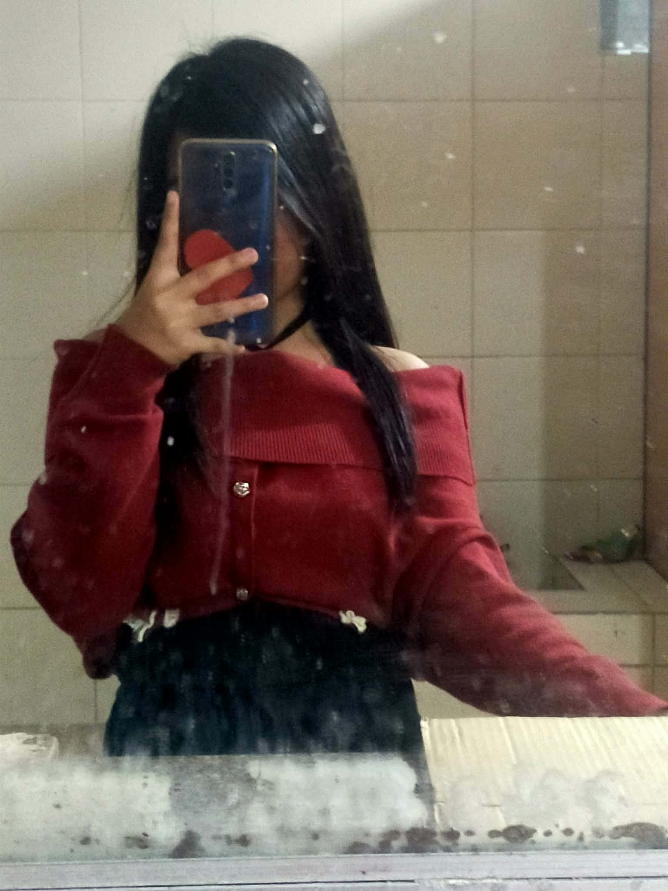
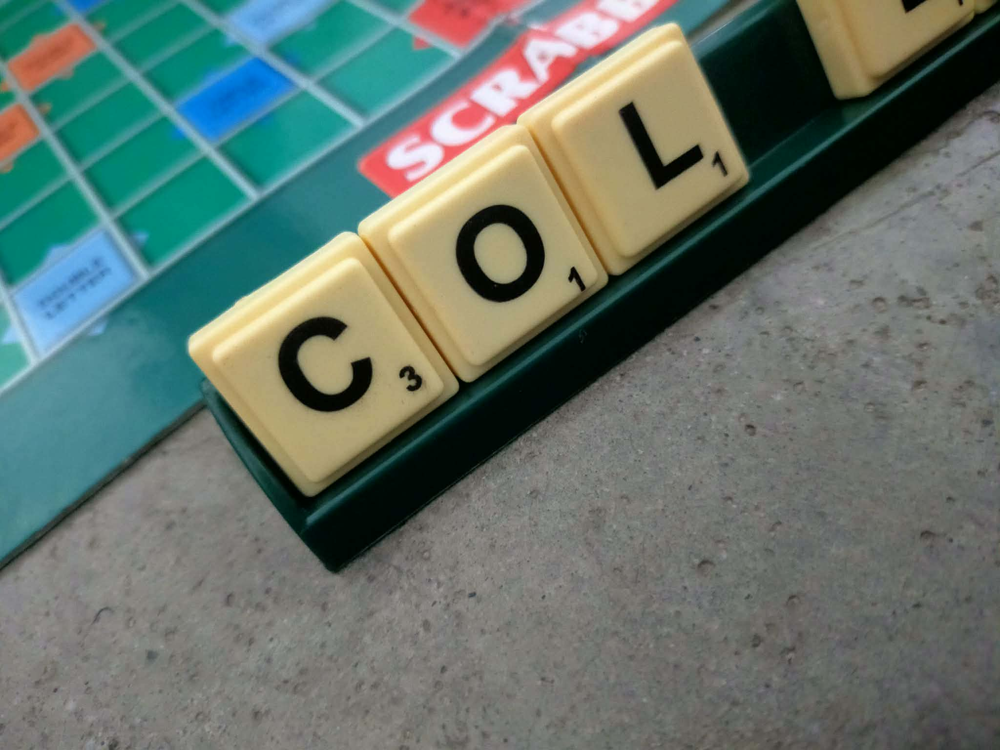
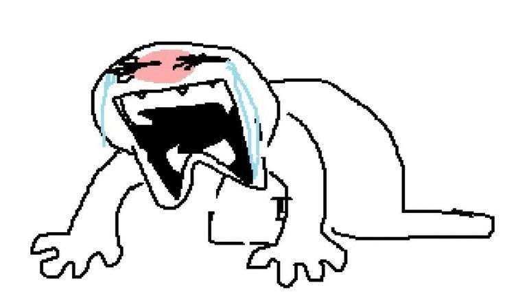
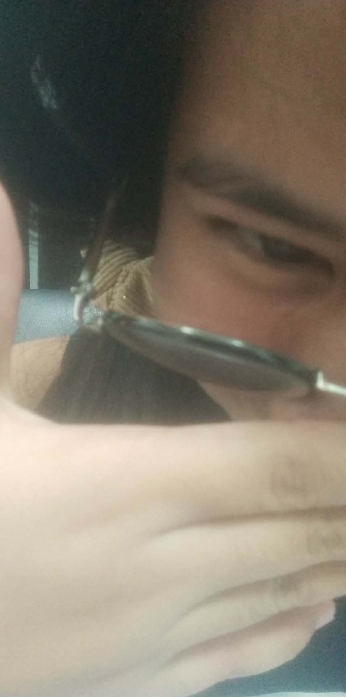
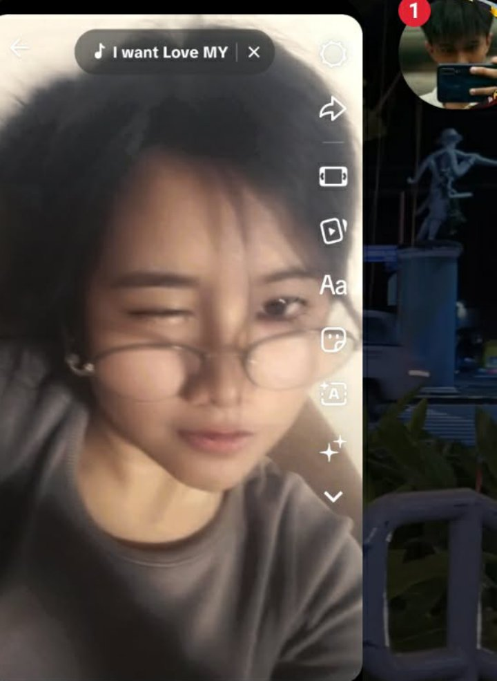
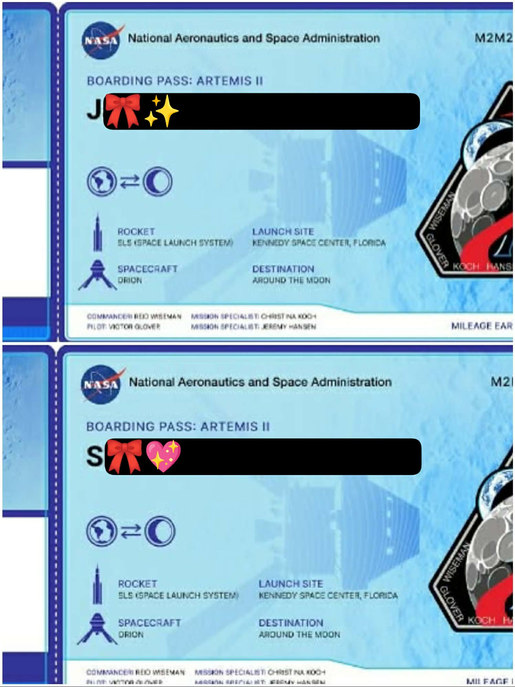
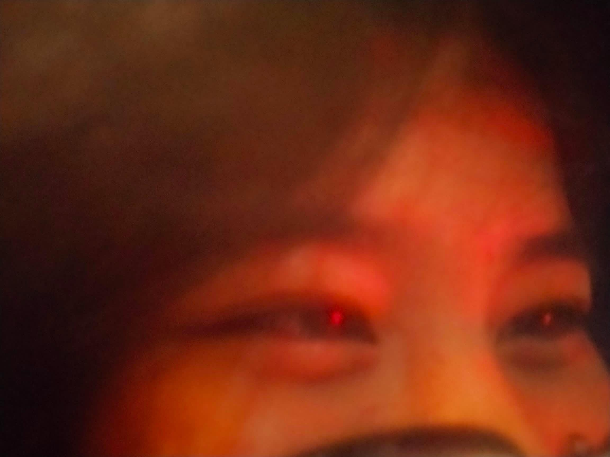

Memories & Things That Remind Me of You








This is not just a website. This is a space made for you. A quiet place where every word, every detail, and every thought was written with intention. Not rushed. Not forced. Not for show. Just real. Because if there is one person who deserves something sincere, calm, and thoughtful — it is you, Nellie.
Name: Nellie
The girl who reads deeply, feels deeply, and thinks more than she shows.
The one who stays calm even when things get heavy.
The one who doesn’t ask for much, yet deserves effort that is never bare minimum.
You are not loud, yet your presence is loud in my life.
You don’t force attention, yet you naturally become the person I look for.







Your smile. Your eyes. The way you look at me. The way you calm my storms. Your patience. Your kindness. Your voice. The way you say my name. How you care. How you stay even when things get heavy. Your humor. Your dedication. The way you listen even when you’re tired. How you see through me without me explaining everything. Your big heart. The way you believe in me quietly. Your laugh that sounds real, never forced. The way you get vulnerable but still stay strong. Your warmth. Your flaws. Your growth. Your loyalty. Your insecurities that you still carry with courage. The way you comfort me. The way you respect me. The way you explain calmly instead of reacting instantly. The way you wait. The way you understand silence. The way you still choose me. The way you give me peace. The way you make me feel understood without saying too much.
I love you because you found me when I wasn’t even looking to be found. I was distracted, busy, and dealing with my own noise, yet somehow your presence became the calm in the middle of it. I love you because your laugh never sounded fake. It sounded genuine. Like something you don’t perform for people. I love you because even when you overthink, even when you feel like a burden, you still stay. You still try. You still care. And that alone says so much about your strength. I know you worry about being loved at your lowest. I know you overanalyze effort, silence, and actions. But if there is one thing you should understand clearly — You are not hard to love. You are just deeply human. Not perfect. Not emotionless. Not shallow. Just real. And real people deserve real love, not bare minimum effort.